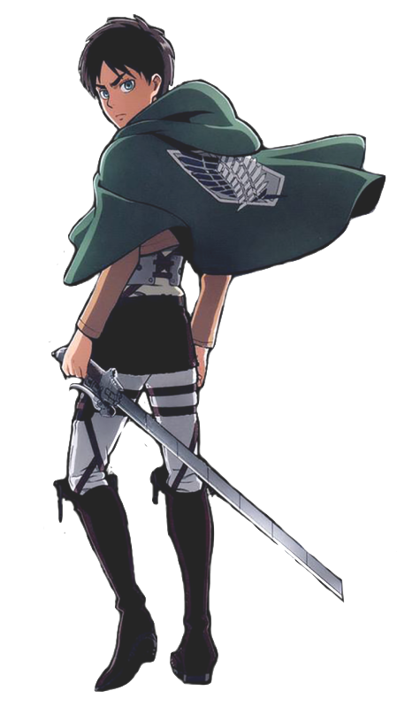
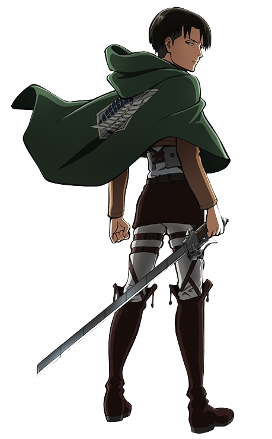
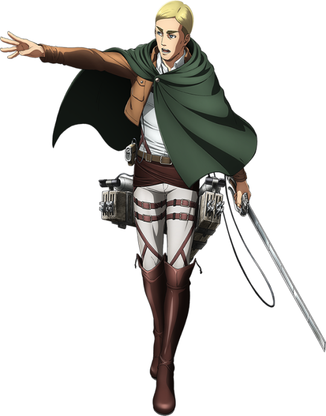
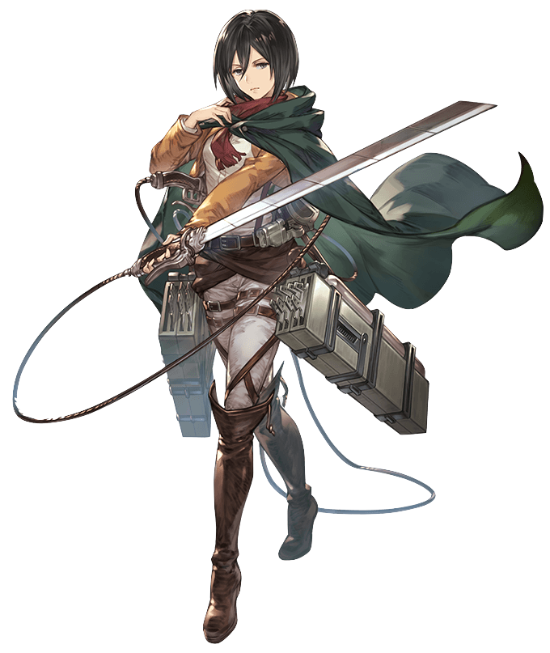
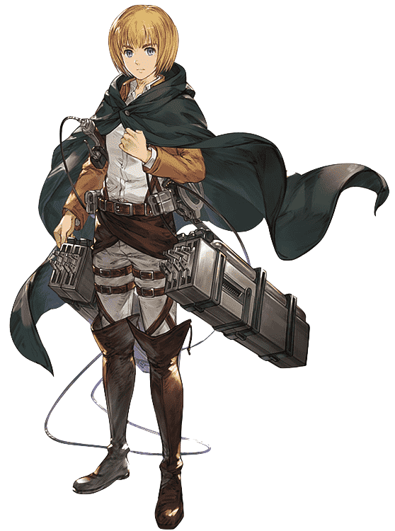

Shingeki No Kyogin

| PERSONNAGES | DESCRIPTION |
|---|---|
|  |
EREN JÄGEREren Jäger (japonais : エレン・イェーガー) est un membre du Bataillon d'exploration et le protagoniste principal de la série. Il a vécu dans le District de Shiganshina avec ses parents et Mikasa Ackerman jusqu'à la chute du Mur Maria. Au cours de l'incident, Eren assiste, impuissant, à la mort de sa mère par la main d'un Titan. Cet événement suscite chez Eren une haine intense envers les Titans, ce dernier voulant les éradiquer jusqu'au dernier. En l'an 847, Eren, Mikasa et Armin Arlelt, leur meilleur ami, s'enrôlent dans la 104ème Brigade d'entraînement. Tous les trois obtiennent leur diplôme, Eren étant à la 5ème place. Ils rejoignent le Bataillon d’exploration après La Bataille de Trost. Eren est connu dans la 104ème Brigade d'entraînement pour son fort caractère. Il est de nature impulsive, bornée et têtue et rentre souvent en conflit avec certains de ses camarades, comme c'est souvent le cas avec Jean Kirschtein. Il est très attaché à ses deux amis d'enfance : Mikasa Ackerman, sa sœur adoptive, et Armin Arlelt, son meilleur ami, pour qui il semble éprouver beaucoup d'affection et de respect. On peut notamment citer le passage où il porte secours à Armin sans hésitation lors du premier chapitre, mettant ainsi sa vie en péril. Il se sacrifie même pour Armin, alors qu'il ne lui restait qu'une jambe. Eren semble aimer être considéré comme un héros et c'est probablement aussi pourquoi il voulait faire parti du Bataillon d'exploration. Cependant, Mikasa a tendance à lui voler ce rôle et cela lui déplaît fortement. Il n'apprécie également pas quand cette dernière le traite comme un enfant. De par la mort de sa mère, Eren porte une grande haine envers les Titans et qu'il possède un pouvoir inconnu ... |
|  |
LEVILivaï (japonais : リヴァイ), souvent designé comme le Caporal-Chef Livaï (リヴァイ兵長 Rivai Heichō), est le Chef (兵士長 Heishichō) de l'Escouade tactique au sein du Bataillon d'exploration. Il est connu pour être le soldat le plus puissant de l'Armée de Paradis. Livaï est excellent aux manœuvres tridimentionnelles, à un point que tout le monde dit qu'il est le meilleur dans ce domaine. Il est également dit qu'il est aussi puissant que toute une brigade, qu'il dépasse largement tous les autres soldats. Il aurait été extrêmement fort, même avant de rejoindre le Bataillon d'exploration. Livaï a une personnalité froide et inaccessible. Sa manière de parler est rarement polie, et il fait parfois des commentaires grossiers ou inappropriés. Son sens de l'humour noir, souvent mal compris, est désagréable et peut être même conçu comme vulgaire. Il a tendance à exprimer les choses d'une manière stricte et insultante. Il provoque ses adversaires allant jusqu'à les rabaisser, ce qui déstabilise la plupart du temps son entourage. |
|  |
ERWIN SMITHErwin Smith (japonais : エルヴィン・スミス) est le 13ème Major du Bataillon d'exploration. Il est l'un des soldats du Bataillon d'exploration ainsi que le Commandant en chef de ce dernier. Il est connu pour être d'une impartialité exemplaire lorsqu'il s'agit du futur de l'humanité : il n'hésite jamais à sacrifier ses hommes dans ce but. Erwin est dépeint comme grave, calculateur, sachant planifier sur le long terme. Alors qu'il fait confiance à ses hommes, il est le premier à réaliser qu'il y a un espion dans le Bataillon d'exploration et prend de savantes dispositions pour sa capture. Il est un orateur éloquent, capable d'influencer de nombreuses personnes, comme le tribunal de guerre tenu de juger Eren et les recrues devant choisir leur orientation au terme de leurs cinq années d'apprentissage. Erwin est très sombre. Il accepte toutes les nouvelles, bonnes ou mauvaises, moqueries ou louanges, avec la même attitude car il connaît ses objectifs et la trame qu'il doit suivre. Il est toujours prêt à élaborer un plan afin de sauver l'humanité. Que ce soit un chemin sanglant ou non, coûteux ou non, il ira jusqu'au bout de ses convictions et tant qu'il n'achèvera pas son but, rien ne l'arrêtera. Il est très résistant même à la torture. Le Père d'Erwin Smith était un brillant professeur intensément curieux de connaître les mystères du monde. Erwin était un des élèves de sa classe et, au cours d'une leçon sur l'histoire de l'humanité, il posa une question à laquelle son père ne pouvait pas répondre véritablement en public. Plus tard ce soir-là, son père partagea secrètement avec lui une théorie hérétique : les manuels officiels distribués par le gouvernement contiendraient de nombreuses contradictions. Ignorant le danger, Erwin fit part de cette théorie aux autres enfants. Cela a attiré l'attention de la Première division des Brigades Spéciales qui s'est approchée de lui et s'est enquise des théories de son père. Plus tard ce jour-là, son père succomba à un accident dans une autre ville. Cependant, Erwin avait deviné que son père avait été assassiné parce qu'il s'était approché trop près de la vérité. Dès lors, il a consacré sa vie à prouver que les théories de son père étaient fondées. |
|  |
MIKASA ACKERMANMikasa Ackerman (japonais : ミカサ・アッカーマン) est la soeur adoptive d'Eren Jäger, ainsi que l'une des protagonistes principaux de la série. Après l'assassinat de ses parents biologiques par des trafiquants d'êtres humains, elle est sauvée par Eren et vit avec lui et ses parents, Grisha et Carla, jusqu'à la chute du Mur Maria. Bien qu'elle désire seulement vivre paisiblement avec Eren, Mikasa choisit de le suivre au sein de l'Armée Humaine. Lors de sa formation dans la 104ème Brigade d'entraînement, elle excelle dans tous les domaines et est classée 1ère de sa promotion. Elle rejoint par la suite le Bataillon d'exploration, dans le but de suivre et protéger Eren. Mikasa a un sens aigu du bien et du mal, mais elle se montre aussi très protectrice envers Eren et fait tout ce qu'elle peut pour lui conseiller de suivre ce qu'elle estime être la bonne voie. Malgré cela, elle est tout à fait consciente qu'elle ne peut pas toujours influencer Eren dans ses différentes décisions. En tant que telle, elle s'est promise de toujours suivre Eren presque partout où il irait et lui mettre des bâtons dans les roues pour toute décision qui nuirait à son bonheur. Eren a souvent l'habitude de la gronder, entre autres à cause du fait qu'elle soit là pour l'aider quand il est en difficulté alors qu'il désirerait se débrouiller seul. Même si elle est parmi les meilleurs des meilleurs, elle reste humble et s'abstient de se donner des airs ou d'afficher une quelconque arrogance. Pourtant, on peut déceler que sa loyauté l'aveugle assez souvent. Mikasa est remarquablement stoïque et possède un sang-froid à toute épreuve. Malgré l'indépendance et la force de Mikasa à aller de l'avant, Eren restera certainement une grande source d'espoir et de réconfort pour elle. On la voit souvent remettre en place l'écharpe qu'il lui a donné le jour de leur rencontre, et la porte en permanence, sauf si le temps est extrêmement chaud, et y blottit son nez à chaque fois qu'elle est en colère. |
|  |
ARMIN ARLELTArmin Arlelt (japonais : アルミン・アルレルト) est un soldat d'élite du Bataillon d'exploration. Il est aussi un ami d'enfance d'Eren Jäger et Mikasa Ackerman, et l'un des protagonistes principaux de la série. Bien qu'il semble être parmi les plus faibles physiquement de la 104ème Brigade d'entraînement, son intelligence et son génie stratégique font de lui un atout inestimable, surtout lorsqu'il est associé à Hansi Zoe. Armin était très timide en tant qu'enfant et avec le fait qu'il était physiquement faible, il était souvent considéré comme une cible facile pour les malfrats locaux. Autrefois il avait toujours besoin de l'aide d'Eren et Mikasa pour se protéger. Ainsi, il a grandi avec une très faible estime de soi mais en grandissant il a appris à apprécier ses talents et à développer une meilleure opinion de lui-même. Il a un rêve : s'aventurer à l'extérieur des murs, voir le monde et l'océan, un rêve qu'il partage avec Eren. Il est également une personne fidèle et loyale qui est prête à se mettre en danger pour défendre ses amis. son intelligence lui ont permis d'impressionner le Commandant Dot Pixis, l'officier supérieur en charge de la défense des villes du Sud intra-muros. |